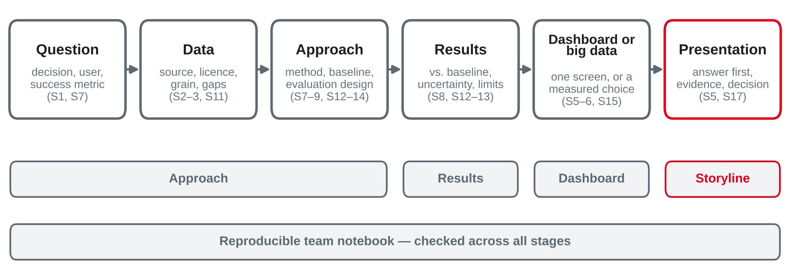

Data Analytics
Team work on the group case study · review checklists for approach, results and dashboards · common pitfalls · feedback round · preparing the presentations
DHBW Mannheim · Data Science and Artificial Intelligence · Semester 5
Your preparation: your case study notebook, one open question for the consultation, a first presentation outline — and, if you use Spark or DuckDB, the reason with a measurement.
An end-to-end case on a public dataset, with a big data framework or a dashboard — delivered as a notebook and a presentation in session 17.

Own illustration based on Chapman et al. (2000) and Few (2013).
Team work
Work on the open points of your case study. Use the checklists to decide what is missing.
Consultations
Each team gets a slot at its table. Bring one concrete question — with the cell, query or chart where you are stuck.
Feedback round
Two teams swap notebooks and dashboards and review each other against the checklists.
Presentation preparation
Turn your results into a storyline for session 17 — titles first, slides later.
Approach · results · dashboards · reproducibility
Own compilation based on Chapman et al. (2000), Kaufman et al. (2012) and McSherry et al. (2015).
Own compilation based on Hyndman and Athanasopoulos (2021), Kohavi et al. (2020) and Provost and Fawcett (2013).
Own compilation based on Few (2013) and Knaflic (2015).
requirements.txt); random seeds fixedBased on Sandve et al. (2013).
What went wrong most often in sessions 1–15
| Pitfall | Seen in | Check |
|---|---|---|
| Incomplete last period | TPC-H 1998 ends on 2 August; Price Paid 2026 to August | Compare like with like; mark provisional data |
| Mixed grain | Order fee on every order line | State the grain of every table |
| Average of ratios | "Revenue per customer" averaged over regions | Sum ÷ sum, defined once |
| Wrong aggregation over time | Summing a level such as MW | Sum flows, average levels |
| Time zones and DST | 46 or 50 half-hours on six days of vic_elec | Store in UTC, analyse in local time |
| Mix effects in medians | New builds registered late | Compare like with like, or control the mix |
| Misleading charts | Truncated bars, dual axes | Session 5 rules |
Own compilation of sessions 2–6, 11 and 15, based on Kimball and Ross (2013) and Knaflic (2015).
| Pitfall | Seen in | Check |
|---|---|---|
| Leakage | A feature from the label window (lift 2.90) | Everything known at the prediction point? |
| Random split of time-ordered data | Churn snapshots, daily demand | Later cut-off, rolling origins |
| Choosing on the test period | Model or parameters picked by test error | Validate first, test once |
| No baseline | Majority class at 65.5 % accuracy | Seasonal naive, a rule, a median |
| Ex post sold as ex ante | Observed temperature: 145 vs. 228 MW | Use only what is known at the origin |
| Averages hide failures | Intervals 82–88 % overall, 37–57 % in Jan–Feb | Per fold, season, segment |
| Peeking, fishing in segments | "Significant" after a few days | Plan once, analyse once |
Own compilation of sessions 7–9 and 12–15, based on Kaufman et al. (2012), Hyndman and Athanasopoulos (2021) and Kohavi et al. (2020).
A draft case study on a city bike-sharing dataset (fictional): trips per station, 2023 to 30 September 2025.
For each statement: name the pitfall and the check that would fix it.
Two teams review each other
Swap notebook and dashboard with your partner team. Review against the checklists, then give feedback.
Feedback is about the work, not the people — and only useful if the other team can act on it before session 17.
Based on Hattie and Timperley (2007).
From notebook to storyline
Own compilation based on Knaflic (2015) and Chapman et al. (2000).
Based on Knaflic (2015).
In your team, without opening a slide tool:
Project A: Partner Company A
Topic: Presented by the partner company in class
Project B: Partner Company B
Topic: Presented by the partner company in class
Partner information stays confidential: no names, data or screenshots in public repositories, chats or the case study.
Preparation: finish the notebook and run it top to bottom on a fresh kernel; work in the feedback of today's partner team; rehearse the presentation once with a timer and prepare a fallback for the demo. Try worksheet 16.